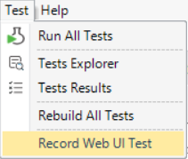
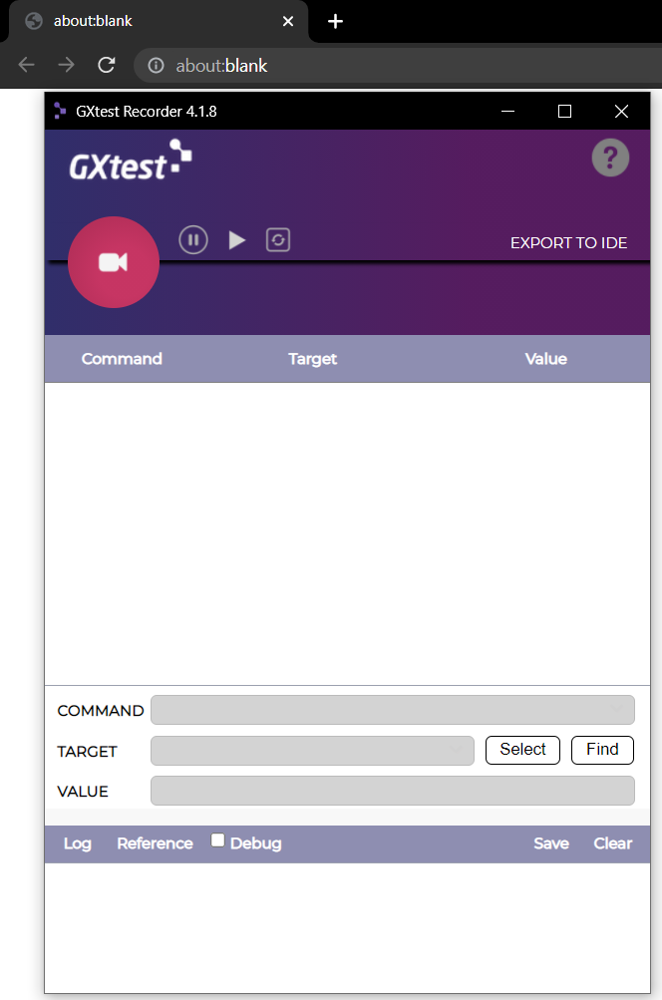
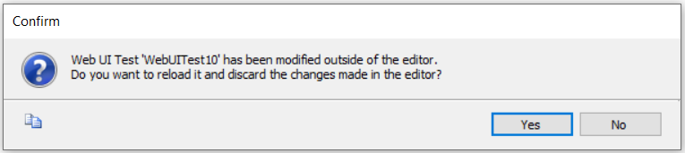

In order to use this feature, the user must click the Record Web UI Test option in the Test menu, within the IDE.

Once that happens, they will be prompted to create a new Web UI Test object. After creation, Google Chrome will be launched, as well as the recorder extension, already recording. This means that the recording will be ready and listening as soon as you start browsing within that Google Chrome window.

Once you are satisfied with the state of your script, you should click the "Export to IDE" button. After that, you should check your IDE window, since it will be showing a popup message stating that the test has been modified outside the IDE, and ask the user whether they want to reload the test. When the user accepts, the test object will be updated and the script captured with the recorder extension will already be there, ready to be run or modified.

Once the user has exported the recording to the IDE, the option will disappear and only a copy to clipboard option will be available. If the user wishes to work further within the recorder after exporting, they can, and once they are done they can just click the copy to clipboard button and paste the contents within their test object in the IDE.
| Backlinks |
| GXtest Menu Commands |